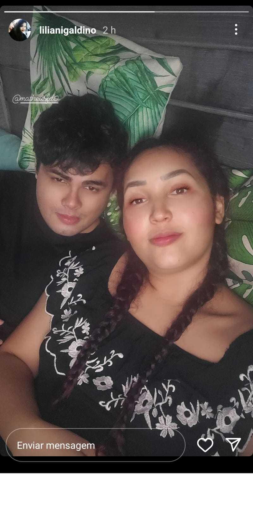

18 de Março de 2022
Primeira Viagem

Não sei se pode se chamar de viagem mas kkkkkkk foi os melhores dias da minha vida só eu e você juntos criar essas memorias preciosas com você meu amor foi perfeito mesmo a gente nao tendo sorte
com a cabana foi muito divertido e feliz por esta do lado da pessoa que amo minha princesa
minha mulher!
EU TE AMO ONTEM HOJE É AMANHÃ SE DEUS PERMITIR TE AMAREI NÃO SÓ PELO RESTO DA MINHA VIDA
MAIS TAMBÉM PELA MINHA ALMA, POIS NUNCA PENSEI QUE ENCONTRARIA ALGUÉM ME TORNASSE CADA DIA MELHOR
ALGUÉM QUE ME APOIA ME AJUDA E QUE NÃO IMPORTA O MOMENTO ESTA LA DO LADO ME FAZENDO CRESER JUNTO A VOCÊ!, SAIBA QUE VOCÊ É E SEMPRE SERA MINHA PRIORIDADE EM TUDO!